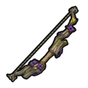

Arco Forjarvalho
Arco · Tier 11 · Nível 35
Apesar do visual comum, é tudo, menos normal.
Atributos
Ataque
620
Vida
20
Economia
Valor
1.950.000
Tempo de fabricação
16h 20min
XP do comerciante
125.000
Trabalhadores: Carpinteiro 28, Mestre 24, Ferreiro 21
Receita


Marcos do projeto
6
Tempo de fabricação -20%
14
-74 Madeira
26
Valor +25%
40
-22 Madeira de ferro
60
Chance de qualidade +1